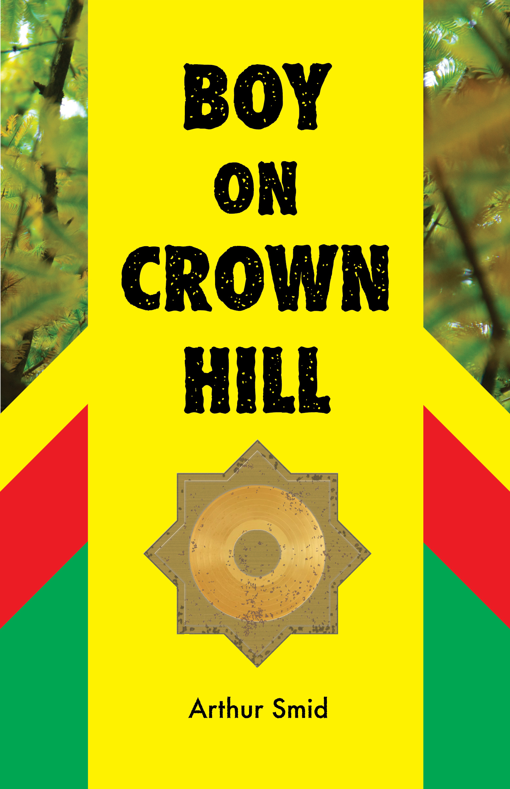
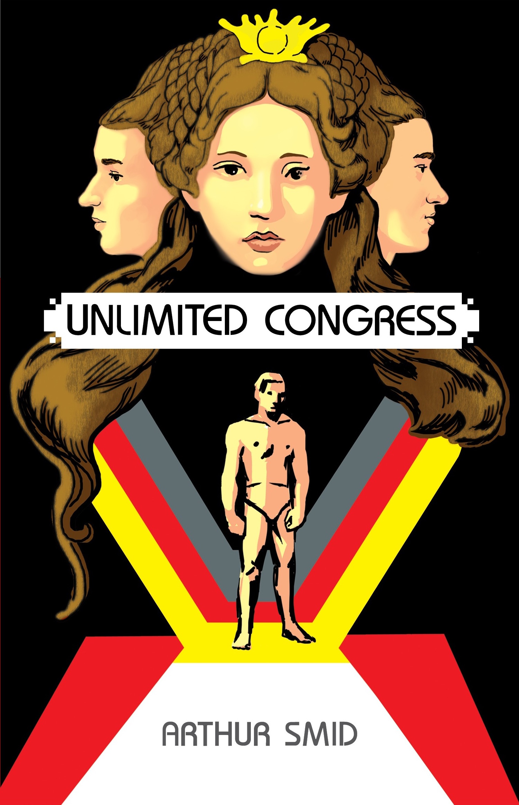

Read the opening pages
Boy on Crown Hill
Unlimited Congress
Working title: Citizen
Boy on Crown Hill
I WOKE AND I’d dreamt of my mother in the living room and my father coming home and putting his hat on the table and taking her in his arms and in the dark of morning I heard a truck passing on the highway and remembered my parents but they were gone. My parents left to memory and only a feeling diminished in me living day to day with my desire for real love and the frustration of what I found in my uncle’s house. If my father and Uncle Jerry shared anything at all I wonder what part of my father he was and what part of them might also be in me. I can tell you at the outset because it isn’t a secret nor will it hurt my case to say that I hated my uncle. I know hate is a bad thing and most destructive to myself of all people but I was trapped in it same as I was fourteen in the loft of a barn at five a.m. getting dressed to do my chores.
In the shed beside the house I chopped wood for the fire. Every morning I was the first to rise and I had to make the fire, slop the hog, and feed the chickens. Not because I wanted to but I had to get up early to finish my chores and leave for school. I resolved to remake what was bad in me into something good. The good and the bad of myself paired inside me and only their expression could I ever hope to control. To transform my life I’d control myself, and be good, in spite of how terrible it was to be a boy in Crown Hill.
I walked the dirt road to the highway with my school books in a green canvas backpack from army surplus. There were no lights along the road except what came from the sky and that was only a shade lighter than the forest that enveloped everything in blackness.
The birds flitted and sang in the trees. My cousin had the kindness I remember of my father but he was only eighteen that winter and quick to laugh because he had nothing to worry about and I was not his son, only a cousin. Uncle Jerry and I had both lost the people most loved by us but what we had in common could stop there because he’d become broken by loss and wanted to break me and I remembered still what it felt like to be loved and whole in my old family. Loss can destroy a person and make them forget everything that is good. I knew Shane loved me and I loved him even though he can never be a father to me. I wonder if there can ever appear another father or if the one I knew is the only one I would ever know. But more than the blood of us, my father and I shared love and love can live in the heart and in anyone and I would make myself good enough to be loved again, for the love of my father still lived in me, though he was gone from me forever.
I heard the engine and saw the swing of headlights across the dirt road and Shane pulled alongside in his old Ford pickup. He leaned out the window.
“You want a ride?”
“If it’s no trouble.”
“Not at all.”
Shane reached across the front seat to open the passenger’s door.
“Hop in little buddy.”
I ran around the front of the car through the glare of the headlights and got in and shut the door. Shane put the car in gear and drove down the dirt road until we turned onto the highway. The radio was playing “When The Levee Breaks”.
“You’ll get there early,” he said.
“That doesn’t bother me.”
“I drive faster than your school bus,” he looked at me with a toothy grin. “You wanna come to the station while I open?”
The gas station was at the edge of town and within walking distance of Jackson High. It was my freshman year and I wanted to be a cop. I told my scoutmaster I was going to take up the law. Mr. Hampton didn’t much care. He probably figured I couldn’t afford to go to Millsaps or Ole Miss or to any college at all.
Shane parked behind the gas station on the gravel lot.
“There’ll be a bonfire at Baxter tonight.”
“Dot going up?” I asked and got out of the cab.
“Yeah. She’s riding with me.”
We walked across the lot behind the station. Shane opened the back door with a key and turned on the lights. A small store of snacks and drinks and I passed the magazine rack, seeing I was current on all issues of Field and Stream, Marksman, and Hunting. I saw the titles: Playboy, Penthouse, and Hustler. Shane was at the register opening the till, not paying attention to me. I reached and pulled the Playboy up far enough to see her face and long brown hair. I knew what was inside. Shane had a few in his room. I slid the magazine back in the rack. I wanted to buy one but I knew I would never be the same if I did.
I went out back and the sun was a white disk behind the clouds on the horizon. I found a stick and turned up a milkcrate and took out my pocketknife. I started with scraping off the bark and after the first few cuts into the wood I knew it was a fish. When I catch a fish and take it in my hands from the water and it comes into a world unknown to itself and unlike anything it has ever experienced and I wonder what I am to it. Am I a boy to the fish? If I am not a boy then what am I?
I carved the head and left the fins for last so as not to break them. I can hold a fish in my hands and feel its entire body struggle to be free and join the water again and continue in that weightless world below the surface where its movement would be just like me flying through the air. Because the air is another substance like water but unlike it in that I can take that air into my lungs and the oxygen of it goes into my blood and feeds the very muscle and bone of me. And it is oxygen that water gives to the fish when it runs through its gills, and standing by the water, I decide whether I will take that fish. Not to kill or to destroy it, but to live. The fish is alive in my hands and I can feel the life in me.
The fish had a nice curve suggested by the wood and I knew it could make a good gift. Jane might think it was good—maybe that I was good. A guy who could make something from his own self.
“You taking off?” Shane called from the backdoor.
I closed my pocketknife and put it in the breast pocket of my jacket. What a stupid idea. Jane doesn’t want a wooden fish. I went to the truck and opened the passenger’s side door and got my bag. I would need to get some money to buy something that she would like. The damn wooden fish was too small for a girl like her. She was new to our school like me but then so different and smart and funny and altogether above it.
“Thanks for the ride,” I said putting on my backpack.
“See you had enough time to make a mess.”
I held up the carving and turned it around in my hand.
“I thought I’d give it to a girl.”
With the edge of my foot I brushed the shavings into a pile and knelt down to pick it up.
“Don’t worry about that.”
“Do you think it’s stupid?” I looked up at Shane. “I would rather give her a silver necklace or something.”
Shane put one arm around my shoulder and said, “A silver necklace is just as stupid as that fish.”
He held out his hand and I gave it to him. Shane inspected the yellow wood and handed it back to me like a prize and I saw it was pretty nice.
“Why don’t you paint it, maybe you could mount it on a board. Give it to her.”
I put the fish in my coat pocket and looked at Shane. He was serious.
“You’re right. That’s a good idea.”
“I’ll help you,” he said. “I have some model paints and there’s a good piece of oak in the barn.”
Jackson High was a white two-story building that had been forced to integrate a few years ago. The front lawn had dandelions and a wooden pole with both the federal flag and the Mississippi state flag. It’d been proved in court that the black and the white schools weren’t separate but equal, and that the black kids actually had much much less, but now the black teachers had no jobs because the white parents wouldn’t allow having their kids taught by blacks. Although I wondered what might be different from a black teacher or would it be just the same.
The school bus passed me and I watched it go through the driveway and out of sight around back to let everyone out in the parking lot. I crossed the lawn toward the front steps and heard a car pull up behind me. I turned and saw a four-door silver Cadillac. The front passenger door opened and Jane put one foot on the curb. I saw her father lean over and kiss her on the cheek. He wore a suit coat and the sunlight caught on his watch when he placed his hand back atop the steering wheel.
Jane stood talking with him a moment and she swung her red hair and closed the door and turned in one motion. I looked away quickly and walked up the stairs like I was going to but stopped at the door. I glanced back and she saw me. She wore an emerald green wool skirt and a white Irish sweater that made her hair look even redder than it was. I could just make out the freckles on her face from where I stood. She walked with her books held against her chest with both arms and started up the stairs.
I opened the door and held it for her and she thanked me as she brushed past. She smelled like apples and soap. I walked alongside her and to strike up a conversation, I said, “What do you think of cops?”
“They’re alright.”
She eyeballed me.
“Just asking is all.”
“No one just asks about cops.”
Jane stopped and turned toward me. She was taller than me by at least six inches.
“I’m not in trouble.”
Two girls standing against the lockers caught Jane’s attention.
“Maybe you are,” she said, walking toward the girls. “And you don’t know it yet.”
“Am I in trouble with you?”
Jane joined her friends and glanced back at me. I smiled, standing in the hallway as people moved between us, and I think I saw her mouth the word, no. Walking to first period I had two things on my mind 1.) I would take control of my life so no one would control me 2.) I should’ve asked her about horses.
Available from Amazon Paperback, Kindle, Kobo, Smashwords

It's December of 1976, Mason Klegg has almost finished his first term as a freshman in high school, in a new town, in the Deep South. An orphan, Mason must conform to the demands of a violent uncle, while also being targeted for abuse at school. He seeks help from a judge, and as Mason starts working to gain emancipation, the judge recruits him to spy on the son of a charismatic preacher and leader of the African American community. In a town divided by race, Mason soon discovers abuse is a feature of American power, and a force he must confront to become a man.
Unlimited Congress
I hold the sword outstretched in my hand.
A bear advances, straining against its leash. With the keeper’s sudden release, the bear lunges, not growling and roaring to frighten me but silent, ears pinned back, going for the kill.
He stops just short of me and I feel his breath. As I raise the blade to protect my face, the bear takes my arm in its jaws. I sense my bones about to break and drawing back my free hand, I strike the bear as hard as I can, one, two, three, four, five, six times, aiming for the eyes and nose.
He opens his mouth and I grab the fur at his neck pulling him away—our strength straining in unison.
Abruptly, the bear retreats and circles around me. I hear the drumming blades of a helicopter overhead. Through the darkness its spotlight sweeps the ground. The beam passes over people crowded upon the stands and disappears beyond the Capitol Building.
Three soldier-slaves step forward with spears.
A pitched spear shimmers in the air and I dive fast. Running their flank, I cut one across the thigh. He staggers and the bear grabs him. The man struggles, his hands grasping at the bear’s face. Nets descend upon them as the bear crushes the man against his body.
I grab an outthrust spear and pull the soldier-slave quickly forward, catching his belly with my blade and digging to his heart. The crowd roars. I glance up to the cubes of glass sheltering the Admiralty along the arena’s crest and a spear whistles past my head. Spinning around I see my opponent draw his sword. He advances and swings wild. I cut his sword arm. Stepping toward him, I bury my steel in his chest, and a net drops across my shoulders with a wet sting. Its jellyfish pulse shudders through my nerves. My steps falter and I catch myself upon my knees. No blade to cut the net loose, I grab it and shove the net into the face of a soldier-slave above me.
Drained of energy I look up, imploring the Senate.
Nine baskens are thrown into the arena to buy my life.
The bill is not law, but it’s not dead.
I am still alive.
The crowd cheers as a soldier-slave pushes his foot into my back. Pinned on the ground, my cheek turned to the thin sand. A man robed in black stands above me reciting the law of victory. I crane my neck to see his face masked in darkness. Soldier-slaves grab each of my arms and lift me, unsteady on my feet. They pull me across the arena to the gate.
Metal bars rise and we enter, our steps resounding through the corridor. A row of green lights along the walls color the concrete. Ahead of me a soldier-slave unlocks a door and the men holding my arms direct me into a room. They push me before a throne. A man.
My brother.
Seret sits in the great chair resting his chin on the palm of his hand. His dark blue coat braided with gold.
“This is a welcome achievement,” he says. “You are alive.”
I don’t risk a word. He takes my face in his gloved hand and kisses my forehead.
“You can die now.”
My eyes betray my feelings.
“Don’t cry. We will not be separated in death. It’s only alive that we are brought to difficulty.”
My brother. He is my brother. The same one I loved as a child. I have done everything in my power to avoid fighting him on the Senate floor. The filibuster tonight was a last resort.
Seret walks to a table with four chairs on either side and one at each end. A covered plate sits upon the table.
“We will eat together one last time.”
He pulls a chair back from the table. I am walked to it and set down. No knife. No fork. I have no weapon. Soldier-slaves stand to either side behind me and Seret takes a seat opposite mine. He removes the cover from the metal plate and the large cooked bird looks cold, dressed with spice and buffeted by halved potatoes and onions.
Seret tears off a leg. “Go on,” he bids me.
Hunger overtakes my thought of resistance. Grabbing a leg, I break it from the cooked bird and eat in silence. My brother picks strands of meat and eats little. He watches me.
“Bring a liter of wine,” he says to the man at my left. I hear the door and turn to see it close behind him. Two soldier-slaves remain in the room. Seret has isolated me somewhere underneath the Capitol Building.
We are entrenched on opposite sides of legislation. To pass the bill, or to kill it—one of us has to die. To kill me here would be illegal. He must challenge me in the Senate. He knows my strengths, my weaknesses. If he believes I could defeat him, maybe he will go above the law. . . . The bone in my hand could be useful if it broke just right.
I upend the plate into my brother’s face and in one motion break the drumstick and pass it through the windpipe of the soldier-slave to my right. I grab the dagger in his belt. My brother draws a gun and levels it to my head.
“Your purchase on life is growing dear.”
I dive under the table as Seret fires, missing me.
My back upon the ground, I kick with both legs launching the table into my brother. He stumbles behind its weight and I rise to my feet. Pushing the table atop him, I pin my brother to the ground. The other soldier-slave lunges with his blade. I move to the side, grab his arm and pull him forward, plunging the dagger into Seret’s eye. The gun falls from Seret’s hand as he reaches for his face. I snatch the gun and point it at my brother.
Walking backwards to the door, I find it unlocked and sprint out. Away from the closed gate, running down the long corridor, I see a door and grab the handle. Locked. I have to get out of the corridor! I race to the next door and it opens on a utility closet. Shelves. Boxes. Lightbulbs. The fusebox is on the inside wall. I flick the breaker labeled “Hallway” and nothing happens. I switch it back and read one labeled “Arena Access”. I trip the switch and the green lights go out.
I can’t see.
I set the lock on the door handle and close it and feel the cold wall. I trail my hand along the concrete, racing into the darkness. I see light spilling under a door. I run my hands on the door. It has no handle. I push and it swings inward and I’m standing in a vestibule that ends at another push door. White walls. Light diffused from a ceiling fixture. I breathe. My breath comes hard. I concentrate on my surroundings and still my body. I stuff the gun under my battledress and walk through the door. A locker room filled with men, half-dressed, naked. The men who notice me stop and watch as I walk into the room. I see myself in a floor-to-ceiling mirror on one wall. My body raked with blood and dirt. The men all turn their attention to me and stop talking. The sound of showers hitting tile fills the room.
A man steps toward me.
“Senator.” He puts a hand on my shoulder. My senses sharpen like nerves extending from my body. He stares at me and smiles. The feeling of threat recedes to genuine astonishment and gratitude. I say to him, “I have the Senate to thank.”
Another man says, “You fought well.” He looks around the room and back to me. “You are the victor.”
“Honor in victor!” a cheer rises from the men assembled.
I call out to them: “We are cut by victory!”
The men respond: “Cut as you are cut!”
I tear off my battledress and walk into the shower, quickly washing the blood from my body. Scanning the shelves I see admiralty uniforms. I rifle through them until I find pants, a shirt and boots my size. Grabbing a bandage from a first aid kit bolted to the wall, I wrap the wound on my right arm and get dressed. My brother’s gun fits snug in the uniform holster. I take a comb from a jar of green disinfectant and fix my hair. I smile at myself in the mirror and say “good” to remember what it feels like.
Soldier-slaves enter from the arena accessway. I count five, no, six, walking into the locker room with shocknives. Confusion roils the men and I move toward the opposite end of the room. The main entrance. A man attending the desk nods at me and I walk through the door.
The corridor is cold and polished. No windows.
I slip into a group of administrative staff walking with purpose. Following the exit sign, I pass a reception desk.
“Garret,” a voice calls from behind the desk.
I push open the doors and emerge from the building. The cast-iron dome dressed in white sandstone towering behind me, the Capitol Building is the largest temple complex ever built by man. Across the grounds I see the Senate Office Building. The floodlit walkway bordered by a huge lawn leads to the shuttle stop. I hurry and stand under a glass shelter with five others, waiting. We are all of one tired body. Any glance exchanged is only to reassure us of our commonality.
Twin lights pierce the distance and grow.
The shuttle hushes into place and the doors slide open.
It is empty. An artificial voice says, “Stand clear of the doors. Next stop Pennington Station.”
Available May 25, 2018

Malik Adam is a senator in a military empire that maintains order in society through fear and theatrical violence. Only men are in the Senate, their bodies artificially enhanced by competing pharmaceutical and technology companies. A stalled decision, or the need to rally the public, can bring two senators to sacred ground where only one will survive. Trained by his father to be a killer on the senate floor, Malik balks when his opponent is his own brother. Their parents' political ambitions bring the brothers into a conflict that forces Malik to question the source of his authority. Monopoly of violence. Collusion of industry. Control of money. Living under constant threat and surveillance keeps citizens dependent upon a brutal power to meet their daily needs. Unlimited Congress illuminates the dark story of a totalitarian state and the people who risk their lives for a true democracy.
Working title: Citizen
Publication date to be announced in 2018
Shane is the new hire at a software company making tools to concentrate wealth and the company’s embrace of militarized hoarding freaks him out. He wants to invest in making civilization work for all and starts a company with the mission to help people self-organize and be universally employed and effective. They build a massive job-matching platform for online labor where incentives and penalties align to create value and distribute it fairly. But their platform must withstand the competition—and it's ruthless. Pundits are trying to discredit Shane as he fights to create the world's biggest platform.